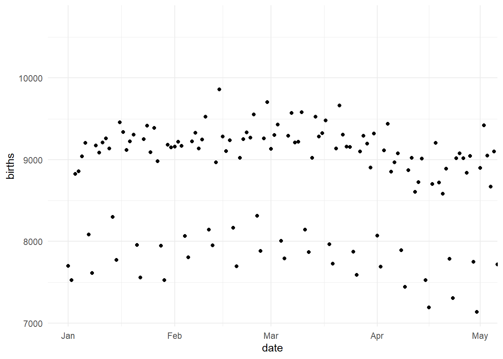
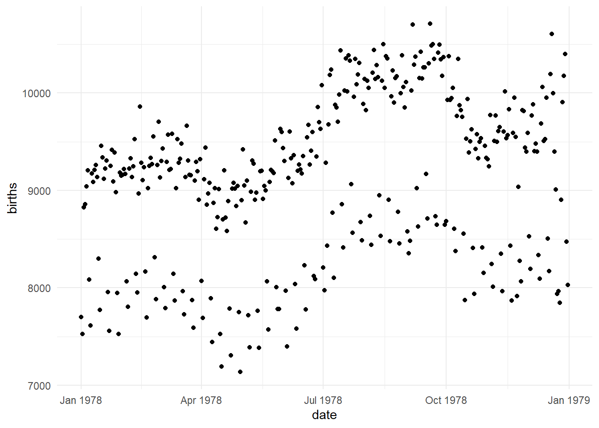

Adjusting Axis Scales
There are 2 ways of adjusting scales (in terms of how they treat data). One way is called “without clipping” where all data is preserved, but we adjust the axis to essentially zoom in or out while keeping all data preserved. Alternatively, we can adjust “with clipping” where all data not in the area specified is no longer accounted for. This will matter if you’re overlaying things like linear model trendlines. The images below come from the ggplot2 cheat-sheet and I think illustrate things well.


1 Adjust Scales Without Clipping
To adjust scales without removing unseen data points, use a gf_refine( ) statment with coord_cartesian( ) specifications.
%>% gf_refine(coord_cartesian(xlim = c(0, 100), ylim = c(10, 20)))
1.1 Example Without Clipping
original = gf_point(Salary~Age, data = SalaryGender, color = ~as.factor(PhD)) %>%
gf_labs(color = "PhD", title = "All Data") %>%
gf_refine(scale_color_discrete(labels = c("0" = "No PhD", "1" = "PhD"))) %>%
gf_lm()
noclipping = gf_point(Salary~Age, data = SalaryGender, color = ~as.factor(PhD)) %>%
gf_labs(color = "PhD", title = "Zoom In Without Clipping") %>%
gf_refine(
scale_color_discrete(labels = c("0" = "No PhD", "1" = "PhD")),
coord_cartesian(xlim = c(40, 80))) %>%
gf_lm()
grid.arrange(original, noclipping, nrow = 1)## Warning: Using the `size` aesthetic with geom_line was deprecated in ggplot2 3.4.0.
## ℹ Please use the `linewidth` aesthetic instead.
## This warning is displayed once every 8 hours.
## Call `lifecycle::last_lifecycle_warnings()` to see where this warning was
## generated.
2 Adjust Scales With Clipping
There are a few ways you can adjust the scales with clipping. For example, you can merely create a subset and only use that data (by default, clipping out the other data). Alternatively you can use a gf_lims( ) command OR a scale_x_continuous( ) command within a refine statement.
2.1 Example With Clipping
Option 1: gf_lims(x = c(40,80)) or gf_lims(x = c(65, NA), y = c(3, NA))
Option 2: gf_refine()
clipping1 = gf_point(Salary~Age, data = SalaryGender, color = ~as.factor(PhD)) %>%
gf_labs(color = "PhD", title = "Zoom In With Clipping", subtitle = "Using gf_lims()") %>%
gf_refine(scale_color_discrete(labels = c("0" = "No PhD", "1" = "PhD"))) %>%
gf_lm() %>%
gf_lims(x = c(40,80))
grid.arrange(noclipping, clipping1, nrow = 1)## Warning: Removed 33 rows containing non-finite outside the scale range
## (`stat_lm()`).## Warning: Removed 33 rows containing missing values or values outside the scale range
## (`geom_point()`).
clipping2 = gf_point(Salary~Age, data = SalaryGender, color = ~as.factor(PhD)) %>%
gf_labs(color = "PhD", title = "Zoom In With Clipping", subtitle = "Using gf_refine()") %>%
gf_refine(
scale_color_discrete(labels = c("0" = "No PhD", "1" = "PhD")),
scale_x_continuous(limits = c(40,80))) %>%
gf_lm()
grid.arrange(noclipping, clipping2, nrow = 1)## Warning: Removed 33 rows containing non-finite outside the scale range (`stat_lm()`).
## Removed 33 rows containing missing values or values outside the scale range
## (`geom_point()`).
3 Adjusting Categorical Scales
Adjusting an axis if we have categorical data is a bit odd. We do so the same way we adjust a no-clipping continuous axis, but have to realize that the first cateogry on our x-axis is at 1. So the boxplot (below) has a default x-range from (1,2). If we want to have a wider range, we can spread to (0,3)
SalaryGender$Gender = recode(SalaryGender$Gender, '0' = "Female", '1' = "Male")
gf_boxplot(Salary~Gender, data = SalaryGender, color = ~as.factor(PhD), width = 0.4, position= position_dodge(.5)) %>%
gf_labs(color = "PhD", x = "Gender", title = "Close to Default") %>%
gf_refine(
scale_color_discrete(labels = c("0" = "No PhD", "1" = "PhD")),
coord_cartesian(xlim = c(1,2))) 
gf_boxplot(Salary~Gender, data = SalaryGender, color = ~as.factor(PhD), width = 0.4, position= position_dodge(.5)) %>%
gf_labs(color = "PhD", x = "Gender", title = "Spread X Axis Out") %>%
gf_refine(
scale_color_discrete(labels = c("0" = "No PhD", "1" = "PhD")),
coord_cartesian(xlim = c(0,3))) 
4 Reverse Scales
Reversing scales will have different codes based on the type of data you have. The general code to reverse scales is:
4.1 Reverse Continuous & Discrete Scales
Continuous: gf_refine( scale_y_reverse( ) )
Discrete: gf_refine( scale_y_discrete( limits = rev ) )
original = gf_boxplot(Salary~Gender, data = SalaryGender, color = ~as.factor(PhD), width = 0.4, position= position_dodge(.5)) %>%
gf_labs(color = "PhD", x = "Gender", title = "Original") %>%
gf_refine(
scale_color_discrete(labels = c("0" = "No PhD", "1" = "PhD")))
y.reverse = gf_boxplot(Salary~Gender, data = SalaryGender, color = ~as.factor(PhD), width = 0.4, position= position_dodge(.5)) %>%
gf_labs(color = "PhD", x = "Gender", title = "Reverse Y") %>%
gf_refine(
scale_color_discrete(labels = c("0" = "No PhD", "1" = "PhD")),
scale_y_reverse()) # Reverse Y axis continuous scale
x.reverse = gf_boxplot(Salary~Gender, data = SalaryGender, color = ~as.factor(PhD), width = 0.4, position= position_dodge(.5)) %>%
gf_labs(color = "PhD", x = "Gender", title = "Reverse X") %>%
gf_refine(
scale_color_discrete(labels = c("0" = "No PhD", "1" = "PhD")),
scale_x_discrete(limits = rev)) # Reverse X axis discrete scale
both.reverse = gf_boxplot(Salary~Gender, data = SalaryGender, color = ~as.factor(PhD), width = 0.4, position= position_dodge(.5)) %>%
gf_labs(color = "PhD", x = "Gender", title = "Reverse Y and X") %>%
gf_refine(
scale_color_discrete(labels = c("0" = "No PhD", "1" = "PhD")),
scale_y_reverse(), # Reverse Y axis continuous scale
scale_x_discrete(limits = rev)) # Reverse X axis discrete scale
grid.arrange(original, y.reverse, x.reverse, both.reverse, nrow = 2)
4.2 Reverse Legend
More details on Legends will be in a different section, but there are ways to reverse legends.
gf_theme( guides( fill = guide_legend( reverse = TRUE ) ) )
original.legend = gf_boxplot(Salary~Gender, data = SalaryGender, color = ~as.factor(PhD), width = 0.4, position= position_dodge(.5)) %>%
gf_labs(color = "PhD", x = "Gender", title = "Original Legend") %>%
gf_refine(scale_color_discrete(labels = c("0" = "No PhD", "1" = "PhD")))
reverse.legend = gf_boxplot(Salary~Gender, data = SalaryGender, color = ~as.factor(PhD), width = 0.4, position= position_dodge(.5)) %>%
gf_labs(color = "PhD", x = "Gender", title = "Reverse Legend") %>%
gf_refine(scale_color_discrete(labels = c("0" = "No PhD", "1" = "PhD"))) %>%
gf_theme(guides( color = guide_legend( reverse = TRUE)))
grid.arrange(original.legend, reverse.legend, nrow = 1)
5 Scale Breaks
To adjust scale breaks, use the breaks command inside the scale_XXX_continuous command.
Sequence: gf_refine(scale_x_continuous(breaks = c(seq(1:13))))
Specific Values: gf_refine(scale_x_continuous(breaks = c(1950, 2000)))
gf_boxplot(Salary~Gender, data = SalaryGender, color = ~as.factor(PhD), width = 0.4, position= position_dodge(.5)) %>%
gf_labs(color = "PhD", x = "Gender", title = "Breaks as Sequence") %>%
gf_refine(
scale_color_discrete(labels = c("0" = "No PhD", "1" = "PhD")),
scale_y_continuous(breaks = c(seq(0,200, by = 20))))
gf_boxplot(Salary~Gender, data = SalaryGender, color = ~as.factor(PhD), width = 0.4, position= position_dodge(.5)) %>%
gf_labs(color = "PhD", x = "Gender", title = "Breaks Specific Values") %>%
gf_refine(
scale_color_discrete(labels = c("0" = "No PhD", "1" = "PhD")),
scale_y_continuous(breaks = c(0, 100, 150)))
6 Scales with Time
Use as.Date( ) within gf_lims( ) function. Example: gf_lims(x = c(as.Date(“2015-01-01”), as.Date(“2015-04-30”)))
6.1 Adjusting limits
Without clipping:
gf_point(births~date, data = Births78) %>%
gf_refine(coord_cartesian(xlim = c(as.Date("1978-01-01"), as.Date("1978-04-30"))))
gf_point(births~date, data = Births78) %>%
gf_refine(scale_x_date())
6.2 Adjusting Breaks
Date Breaks and Lables:
Use scale_x_date(date_breaks = “8 months”, date_labels = “%b %y”)
date_breaks: can be any number of days, weeks, months, etc. (and you can
also add date_minor_breaks = “ “ date_labels: %b is the abbreviated
month (other examples are %m as month number or %B full month name) and
%y is the 2-digit year (other examples are %Y for 4-digit year, or %d as
2-digit day, %e is day followed by comma, etc.)